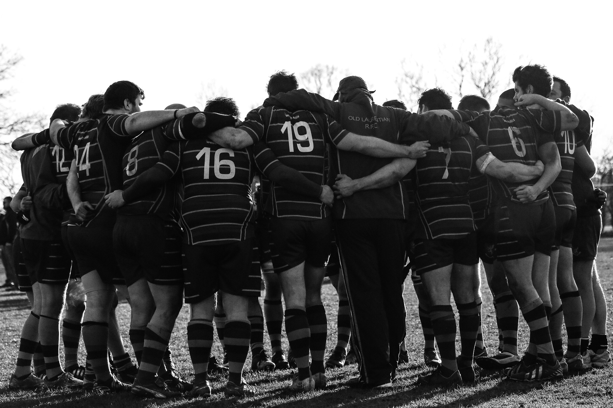
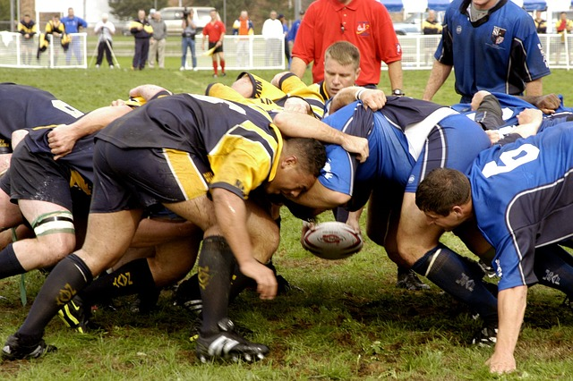
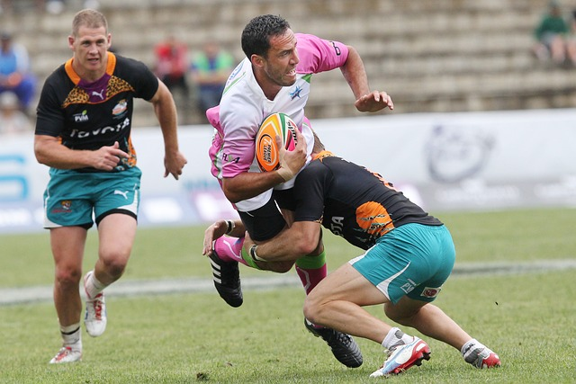

All Blacks Rugby
The team perform a haka before every match; this is a Māori challenge or posture dance. Traditionally the All Blacks use Te Rauparaha's haka Ka Mate, although players have also performed Kapa o Pango since 2005.
The New Zealand national rugby union team, commonly known as the All Blacks,[1][2] represents New Zealand in men's international rugby union, which is considered the country's national sport.[3] Famed for their international success, the All Blacks have often been regarded as one of the most successful sports teams in history.[4][5] The team won the Rugby World Cup in 1987, 2011, and 2015, second only to South Africa's Springboks, who have won the Rugby World Cup four times.[a] They were the first country to retain the Rugby World Cup. Since their international debut in 1903, the All Blacks have played test matches against 19 nations, of which 12 have never won a game against the team. New Zealand has a 77 per cent winning record in test match rugby, and has secured more wins than losses against every test opponent.
The team has also played against three multinational all-star teams, losing only 8 of 45 matches. Since the introduction of the World Rugby Rankings in 2003, New Zealand has held the number one ranking longer than all other teams combined.[6] They jointly hold the record for the most consecutive test match wins for a tier-one ranked nation, along with England. The All Blacks compete with Argentina, Australia and South Africa in the Rugby Championship, and have won the trophy twenty times in the competition's 28-year history. The team has completed a Grand Slam tour against the four Home Nations four times (1978, 2005, 2008 and 2010). World Rugby has named New Zealand the World Rugby Team of the Year ten times since the award was initiated in 2001,[7] and an All Black has won the World Rugby Player of the Year award ten times over the same period. Nineteen former All Blacks have been inducted into the World Rugby Hall Of Fame.
